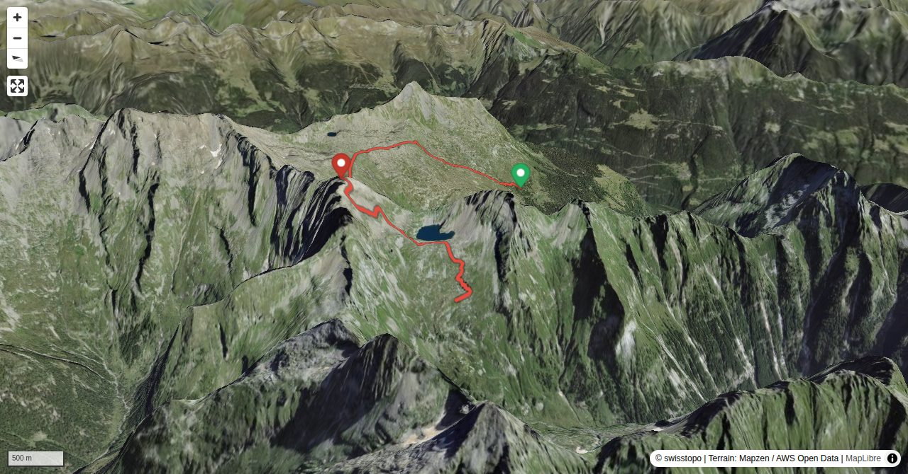

Der Pizzo Barone ist, bedingt durch seine Lage, ein ziemlich edler Berg. Denn er bringt drei wichtige Haupttäler des Tessins zusammen: die Leventina, die Vallemaggia und die Val Verzasca. Zugleich ist er der höchste Gipfel der Val Verzasca. Meist wird er auch von dort bestiegen, auf einem guten Bergweg. Spannender ist jedoch, den Berg zu überschreiten, und so auch noch die Leventineser Seite kennenzulernen (während die dritte, jene zum Vallemaggia hin, wohl zum Anschauen, aber nicht zum Anfassen gedacht ist). Und: Wir tun das nicht auf dem schnellsten, sondern auf dem schönsten Weg – jenem durch den hinteren Talkessel der Val Chironico.
Abstieg (T3): Guter Bergwanderweg, markiert, weitgehend sanftes Gelände.
Quick Facts
| Summit elevation | 2835 m |
|---|---|
| Difficulty | SAC T4+ Check the route notes below for terrain and commitment level. Guide |
| Trailhead | Rifugio Alpe Sponda |
| Distance | 7.3 km (out-and-back) |
| Total ascent | ~868 m |
| Elevation range | 2000-2834 m |
| Route sources | SAC Route Portal |
Photos


All photos: SAC Route Portal
Interactive Route Map
Map tiles: © swisstopo (CC BY 3.0) | © OpenStreetMap contributors | Map library: Leaflet. Route line is approximate — verify against the SAC Route Portal before going.
3D Terrain View

Tiles: © swisstopo (SWISSIMAGE) + AWS Terrain Tiles. Powered by MapLibre GL JS. Open fullscreen ↗
Route Details
Aufstieg von Norden, Abstieg nach Süden
- TODO: Step 1 description.
- TODO: Step 2 description.
Terrain & safety
Aufstieg (T4+): Über weite Strecken weglos, am Gipfelhang loses Geröll und instabile Blöcke (bei Andrang Vorsicht vor Steinschlag). Bei Nebel schwierige Wegfindung auf der ganzen Route. Abstieg (T3): Guter Bergwanderweg, markiert, weitgehend sanftes Gelände.
Source: SAC Route Portal
Getting There & Back
Start: Rifugio Alpe Sponda (2000 m)
Directions from to Rifugio Alpe Sponda
End: Rifugio Barone (2172 m)
Directions from Rifugio Barone back to
Weather Planning
7-day summit forecast (live)
Loading forecast…
Elevation Profile
Computed from the inlined GPX track (elevations from SwissTopo height API).